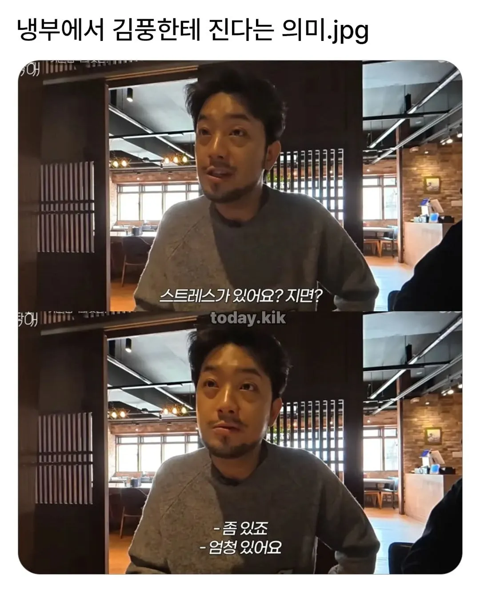
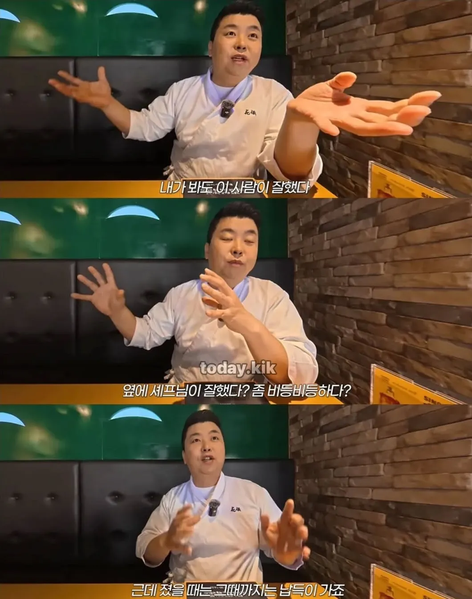
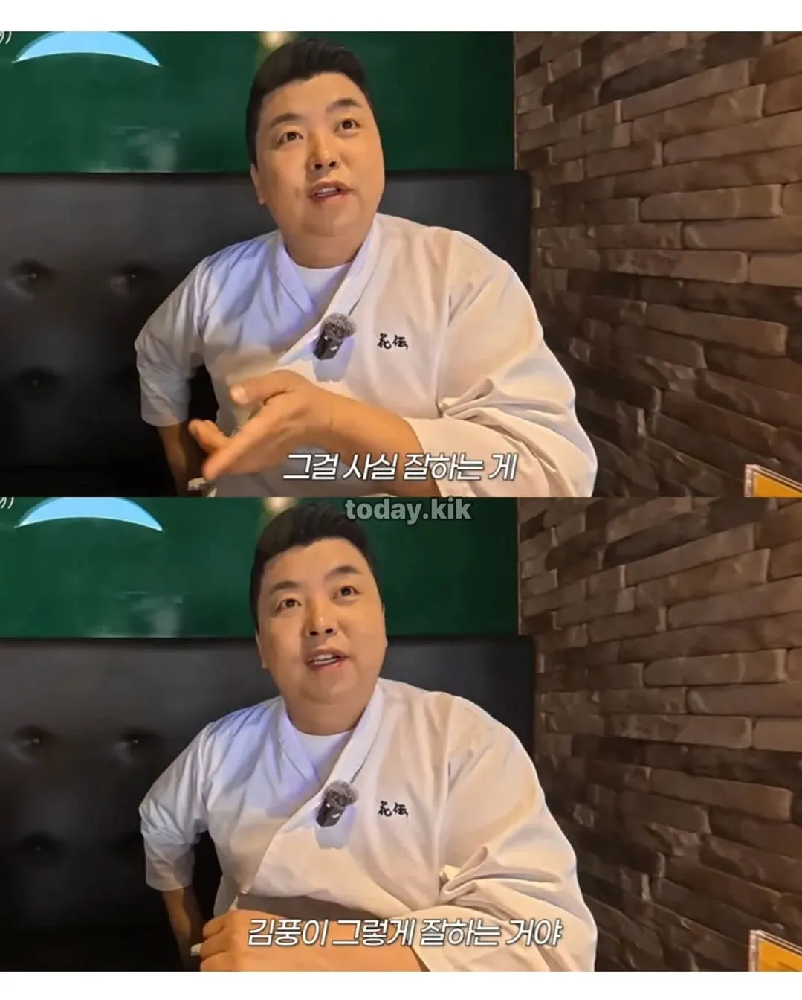
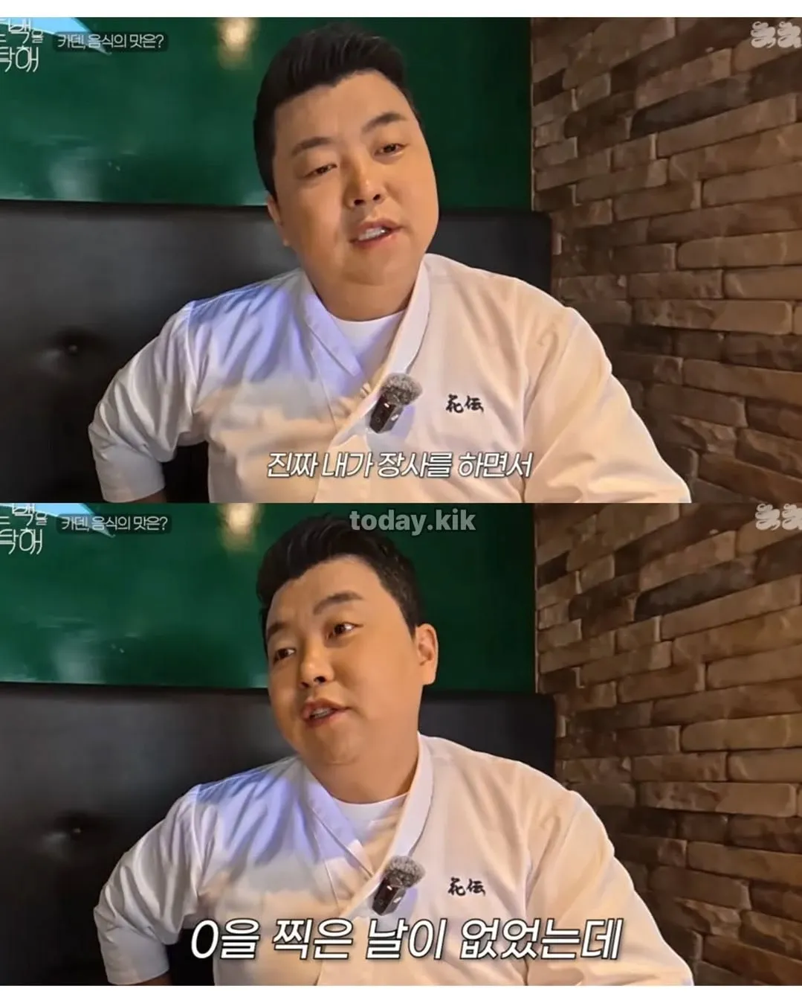

그래서 더 빡치는거지 ㅋㅋ
작가 : 연재안함
지든 이기든
이 이야기 나와서 개열받을듯 ㅋㅋㅋㅋ
무조건 이겨야 함
김풍이 이김 : 작가한테 짐?ㅋㅋㅋ
김풍이 짐 : 작간데 질 수도 있지? ㅋㅋㅋ
김풍의 요리는 항상 비슷하지만 게스트는 항상 다르다
이게 쉐프면 못 할 일인데 김풍은 가능하고 엄청난 무기임ㅋㅋㅋㅋ
ㄹㅇ 쉐프 자존심에 경연에서 비슷한 요리 계속 내는거 못하지 ㅋㅋ
각종 조미료나 소스류도 부담없이 쓰잖어ㅋㅋㅋ 이제 셰프들도 시제품 적당히 섞어서 잘 쓰더라ㅋㅋ
항상 맛은 비슷하더라도 외관을 충격적으로 다르게 꾸미는 것도 한몫하는듯ㅋㅋㅋ
겸손을 배웠다는건가?
저거 제일 못하는게 윤남노 ㅋㅋ 출연자 냉장고로 지 먹고 싶은거 만듬 ㅋㅋㅋㅋㅋ
그리고 윤남노는 김풍 한테 처음 졌을때 소주3병깟다함 ㅋㅋ
시즌 1때 샘킴형 얼마나 힘들었겠어 ㅋㅋㅋㅋㅋ
그래서 흑화해서 송곳니 드러내잖음 ㅋㅋ
ㅋㅋㅋㅋ진짜 순도 100% 자기가 먹고싶은거 만듦
매출 0이면 자영업자로써 최고의 스트레스 수치 아니냐 ㅋㅋㅋㅋㅋ
매출 0은 나랑 직원들만 알고 있어서 쪽까지는 아닌데
김풍한테 패배는 방송에 박제되서 거의 그 급의 스트레스이긴 한 듯 ㅋㅋ
???: 저 셰프 아닌데용
셰프도 아니고 그냥 바다 코끼리도 아니고 음란한 바다 코끼리한테 요리 대결을 지면 당연히 충격이 크지
멘탈까지 갉아먹는 그야말로 마교 사술
최근이 김풍이 별에 너무 집착하는거 같았는데
이제 내려놓고 다시 광대로 돌아온듯
???: 김풍이 요리 실력 느니까 재미가 없어졌어요
ㅋㅋㅋㅋㅋㅋㅋㅋ
대신 김풍은 매출 0원인 기분을 자주 느껴봤으니까...
매출 0원을 자주찍는 남자한태 졌다고?
살아서 무얼하리...
걸어온 길이 다른데 ㅋㅋ
김풍 승리모음집=쉐프들 흑역사 모음집
전 쉐프가 아니라 작가인데용